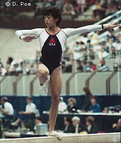

Sabrina Mar (USA)
1987 Pan American Games AA Champion

Competition Results
1979
California Championships (Class III): 1st B, 2nd UB
1983
Canadian Classic: 1st FX
Champions All: 9th AA
Jr. American Classic: 22nd AA
Jr. USA Championships: 2nd AA
1984
Jr. American Classic: 10th AA
Pacific Alliance Championships: 2nd AA, 1st UB, 3rd V
1985
American Classic: 8th AA
American Cup:
Intl. Mixed Pairs: 13th Team
US Classic: 1st AA
US Championships: 1st AA1st UB, 1st FX, 2nd V, 2nd B
USA-CHN Dual Meet: 2nd Team, 3rd AA, 1st UB, 1st FX, 2nd V
USA-FRA Dual Meet: 1st Team, 3rd AA
World Championships: 6th Team, 14th AA, 6th V
1986
American Classic: 3rd AA
US Championships: 11th AA, 4th B
USA-USSR Dual Meet: 2nd Team, 9th AA
1987
Pan American Games: 1st Team, 1st AA, 2nd UB, 2nd FX, 3rd B
US Championships: 3rd AA, 2nd UB
World Championships: 6th Team, 21st AA, 8th FX
1988
US Olympic Trials: 21st AA
USA-USSR Dual Meet: 2nd Team, 3rd AA
This page was created on September
17, 2005.
© Gymn Forum